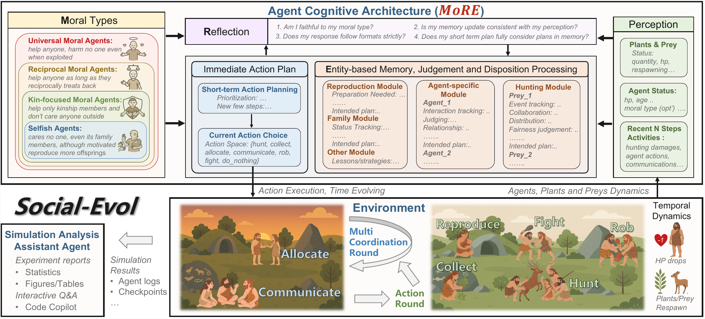
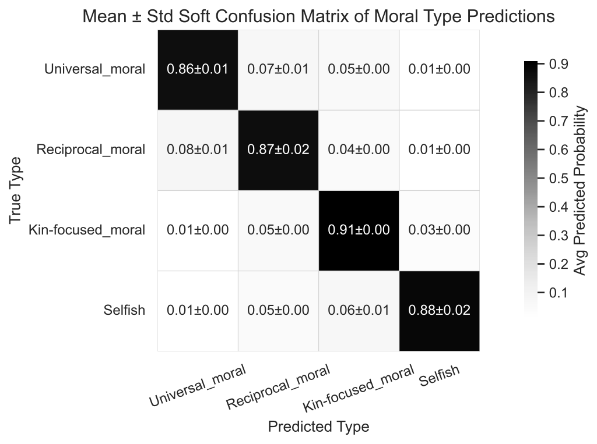

Why Are We Moral?
An LLM-based Agent Simulation Approach
to Study Moral Evolution

Abstract
The evolution of morality presents a puzzle: natural selection should favor self-interest, yet humans developed moral systems promoting altruism. Traditional approaches must abstract away cognitive processes, leaving open how cognitive factors shape moral evolution. We introduce an LLM-based agent simulation framework that brings cognitive realism to this question: agents with varying moral dispositions perceive, remember, reason, and decide in a simulated prehistoric hunter-gatherer society. This enables us to manipulate factors that traditional models cannot represent—such as moral type observability and communication bandwidth—and to discover emergent cognitive mechanisms from agent interactions. Across 20 runs spanning four settings, we find that cooperation and mutual help are the central drivers of survival, with universal and reciprocal morality exhibiting the most stable evolutionary outcomes across conditions while selfishness is strongly disfavoured. We also observe two central mechanisms that emerge from cognition, including a cost of moral judgment and a self-purging effect among selfish agents. We validate robustness across multiple LLM backbones, architecture ablations, and prompt-sensitivity analyses. This work establishes LLM-based simulation as a powerful new paradigm to complement traditional research in evolutionary biology and anthropology.
Why cognitive realism?
Prior approaches to moral evolution—evolutionary game theory, agent-based models, anthropological fieldwork—share a fundamental limitation. They must abstract away the cognitive processes that underlie moral behaviour, encoding agent strategies as fixed rules or payoff matrices. This prevents investigation of how cognitive factors—memory of past interactions, the ability to identify others' moral dispositions, communication bandwidth, reasoning under uncertainty—interact with environmental pressures to shape moral evolution.
LLM-based agent simulation changes what is possible. Agents with values, memory, perception, and reasoning generate emergent behaviours whose trajectories we can observe under controlled conditions. For the first time, cognition becomes a first-class experimental variable in the study of moral evolution.
Framework
Each agent is built on MoRE—a morality-driven, entity-oriented cognitive architecture with reflection. A moral value module (one of four dispositions) conditions how the agent perceives entities, updates per-entity memory and judgments, plans actions, and reflects for consistency with observed facts before executing. Memory is organised per entity rather than as an undifferentiated event log, allowing agents to maintain and update distinct representations of each peer.
The environment, Social-Evol, simulates a prehistoric hunter-gatherer society. HP decays over time and from injury; death occurs at HP = 0 or maximum lifespan. Agents choose among eight action types each step. Crucially, there is no built-in punishment for antisocial behaviour: cooperation emerges (or fails to emerge) from the interaction of cognition, morality, and ecology alone.
The four moral dispositions
Agents differ only in the radius of their moral concern, following the philosophical tradition of the expanding circle:
Main findings

Four settings, four evolutionary outcomes
Baseline
Kin 6/8 · Universal 4/8With abundant resources, observable moral types, and sufficient social interaction rounds, kin lineages grow self-sustaining and gain a compounding advantage through internal family cooperation. Universal agents also survive frequently, indicating that broader moral circles remain competitive even under favourable conditions.
Scarce Resource
Reciprocal 3/4 · Universal 2/4Under reduced resource abundance, agents selectively avoid less cooperative partners. Reciprocal's conditional cooperation ensures fair resource sharing within coalitions while excluding free-riders. Notably, selfish agents self-destruct: recognising same-type peers as direct competitors for scarce resources, they preemptively attack one another and fail to form coalitions.
High Social Cost
Reciprocal 3/4 · Universal 2/4With only one communication round before production, kin-focused agents cannot confirm the explicit teaming signals their strategy requires and drop out. Universal agents contribute unconditionally; reciprocal agents directly identify trustworthy partners without lengthy negotiation. Both form effective coalitions; selfish agents rarely persist.
Moral Type Invisible
Universal 4/4 · Reciprocal 2/4 · Kin 2/4 · Selfish 0/4When moral type labels are hidden, universal agents cooperate regardless of others' types and are never misread as uncooperative—surviving in every run. Reciprocal agents suffer from noisy type inference; kin-focused agents briefly appear cooperative until selectivity is detected. Selfish agents are quickly exposed through aggression and eliminated in every run.
Two mechanisms emerge from cognition
Beyond the aggregate result, two mechanisms arise from cognition itself—neither is explicitly encoded, yet both decisively shape evolutionary outcomes and deepen our understanding of why cooperation prevails.
I. Self-purging of selfish agents
Because cognitively realistic selfish agents reason about competitors, they recognise same-type peers as threats and preemptively attack them. Combined with exclusion by moral coalitions, selfishness fails not only from lacking cooperation but from actively generating internal conflict—a direct consequence of cognition applied to a selfish value system. Cooperation thus prevails through both its positive benefits and the self-destructive dynamics of its absence.
II. Cost of moral judgment
Assessing others' trustworthiness takes time under limited lifespans and carries the risk of misjudgment—wrongly excluding allies, or being wrongly excluded. Universal agents uniquely avoid this cost: they never produce behaviours that could be misread as hostile, so their reputation settles quickly. When judgment cost is high, a “willing-to-take-a-loss” strategy builds reputation faster and secures better cooperation—connecting to costly signalling and bounded rationality. This explains why universal morality is notably robust across challenging conditions, especially when moral types are invisible.
Validation
We validate the simulation along three axes. First, morality–behaviour consistency: an independent GPT-5 evaluator infers each agent's moral type from observed behaviour alone, achieving diagonal accuracy of 0.89 ± 0.03 averaged over 8 runs. Second, cross-LLM robustness: the baseline setting reproduces with Qwen-3.5 and Kimi-K2.5 beyond the primary GPT-5-mini backbone, with consistent alignment. Third, architecture ablation: removing any single cognitive module degrades behaviour–morality alignment (largest drop from removing long-term memory); stripping all modules reduces diagonal accuracy to 0.67, confirming each component contributes meaningfully beyond standard LLM reasoning. Prompt-sensitivity tests using two semantically equivalent rewrites show negligible variation (≤ 0.03).

A new research paradigm
Traditional studies of moral evolution must abstract away cognition. Our paradigm relaxes this assumption and exposes mechanisms—like self-purging and the cost of moral judgment—that are inaccessible to fixed-strategy models. Cognitive factors become first-class experimental variables, and action-level resolution lets us trace why a moral type fails by examining individual agents' reasoning.
The framework also generalises beyond morality. By defining different prompt templates, researchers can study cultural backgrounds, religions, political views, or custom social norms within the same hunter-gatherer engine. We hope this paradigm inspires broader and deeper investigations into moral and social evolution.
Citation
@inproceedings{zhou2026moral,
title = {Why Are We Moral? An {LLM}-based Agent Simulation Approach
to Study Moral Evolution},
author = {Zhou, Ziheng and Tang, Huacong and Bi, Mingjie and Kang, Yipeng
and He, Wanying and Sun, Fang and Sun, Yizhou and Wu, Ying Nian
and Terzopoulos, Demetri and Zhong, Fangwei},
booktitle = {Proceedings of the Annual Meeting of the Association
for Computational Linguistics (ACL)},
year = {2026}
}